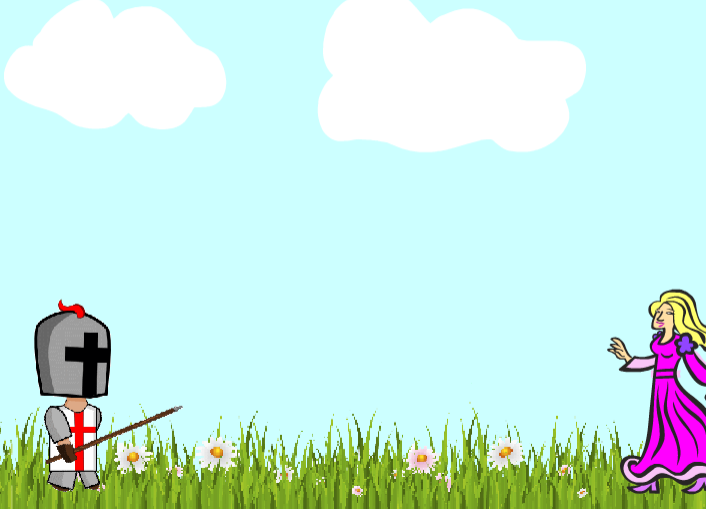

T A R A B H A T I A

Hi! My name is Tara and I am an incoming senior at Washington High School in Fremont, CA. I consider myself an extroverted introvert. I love listening to music and discovering new TV shows. My favorite food is Thai food and my least favorite foods are lentils and eggplant. A fun fact about myself is that I was allergic to chocolate for five years.
In this Scratch side-scroller game, the main objective is to get the knight to save the princess while overcoming obstacles along the way. To play, you must use the up arrow key to jump and the left and right arrow to move the knight across the grass